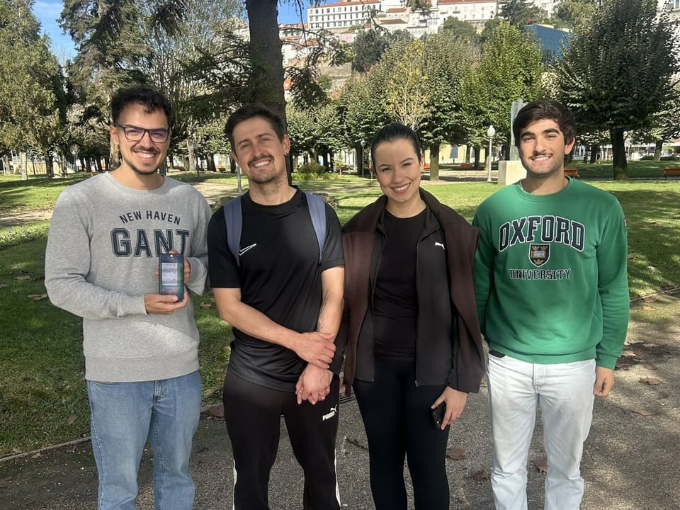

Aumovio
Automotive software in productionSoftware automóvel em produção
At Continental Engineering Services, now Aumovio, since 2023. I develop and test software for car components, following the industry's quality and safety standards (MISRA, ASPICE, ISO 26262).Desde 2023 na Continental Engineering Services, hoje Aumovio. Desenvolvo e testo software para componentes de automóveis, seguindo as normas de qualidade e segurança do setor (MISRA, ASPICE, ISO 26262).
Aumovio
Automated deliveries instead of manual onesEntregas automáticas em vez de manuais
I built and maintain a Jenkins pipeline that delivers technical data to car manufacturers automatically, with less manual work and faster releases.Construí e mantenho um pipeline no Jenkins que entrega dados técnicos aos fabricantes automóveis de forma automática, com menos trabalho manual e lançamentos mais rápidos.
Aumovio
A custom internal toolFerramenta interna à medida
A Python application with a graphical interface that helps the team find bugs faster.Uma aplicação em Python, com interface gráfica, que ajuda a equipa a encontrar erros mais depressa.
MSc thesis · ContinentalTese de mestrado · Continental
Measuring performance in real timeMedir o desempenho em tempo real
I designed and built a module that measures the processor load of a car control unit in real time, for better monitoring and diagnostics.Desenhei e implementei um módulo que mede em tempo real a carga do processador de uma unidade de controlo automóvel, para melhor monitorização e diagnóstico.
Co-founderCofundador
SproutBolt
With Leonardo Marques, I run SproutBolt: websites, online stores, apps and automation for cafés, salons, associations and other local businesses.Com o Leonardo Marques, gerimos a SproutBolt: websites, lojas online, apps e automação para cafés, cabeleireiros, associações e outros negócios locais. sproutbolt.com ↗

Fundação EDP
GreenTrack, an award-winning AI appGreenTrack, uma app com IA premiada
I was part of the team of four that built GreenTrack, an app that reads electricity bills and compares tariffs. It won Fundação EDP's Escola da Energia.Fiz parte da equipa de quatro que criou o GreenTrack, uma app que lê faturas de eletricidade e compara tarifários. Venceu a Escola da Energia da Fundação EDP.